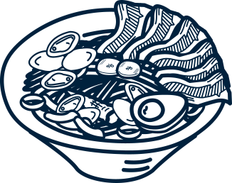
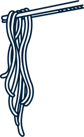

 
Loading
創業知識部落格
You must know !
創業七大地雷不可不知
筆者最近和一個朋友聊天，意外得知了身邊的一位朋友華麗又短暫的創業過程，本篇就分享這個血淋淋的例子，以此例來一一說明創業的七大地雷吧！
詳細內文...
創業七大地雷不可不知
筆者最近和一個朋友聊天，意外得知了身邊的一位朋友華麗又短暫的創業過程，本篇就分享這個血淋淋的例子，以此例來一一說明創業的七大地雷吧！
詳細內文...
創業七大地雷不可不知
筆者最近和一個朋友聊天，意外得知了身邊的一位朋友華麗又短暫的創業過程，本篇就分享這個血淋淋的例子，以此例來一一說明創業的七大地雷吧！
詳細內文...
創業故事
我要加盟